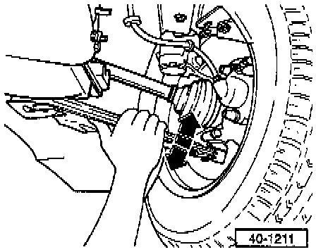
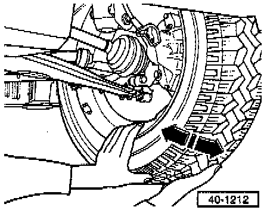

Ball Joint: Testing and Inspection
Ball Joint Lower
- Check axial play by forcing ball joint down and back up while observing play in joint.

- Check radial play by pressing lower part of wheel outward and inward while observing play in joint.
- Ball joint is OK if there is no noticeable play in joint (take into account play in wheel bearing and upper suspension strut mounting)